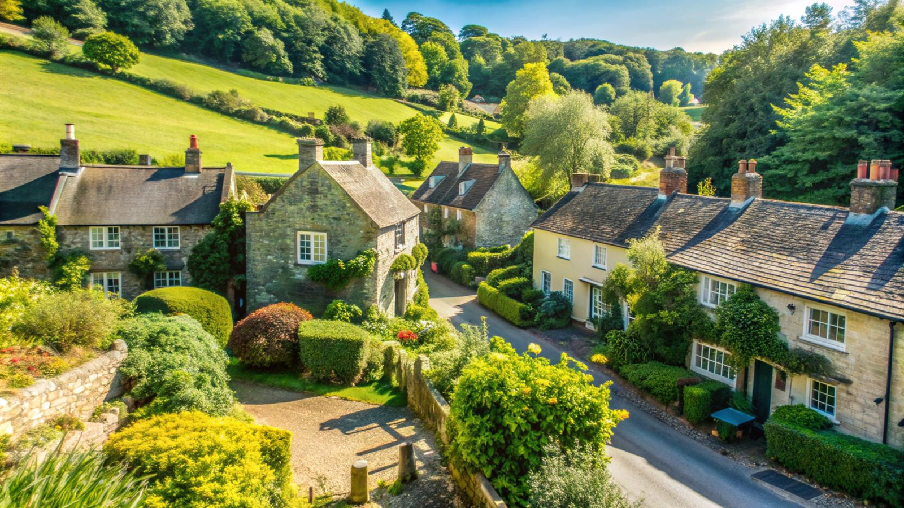

Areas we cover: 30 miles around Helmsley
From the North York Moors to the coast and the Vale of York — local removals, packing and storage across Ryedale, Hambleton, Scarborough and York.
Local removals, wherever you are in our 30-mile area
We’re based in Helmsley, right at the centre of North Yorkshire. That puts the whole of Ryedale, the North York Moors National Park, the Howardian Hills, the Vale of York, Thirsk and Northallerton, and the coast from Whitby to Scarborough within easy reach.
Being local means lower travel costs for you, crews who know the roads and access, and a team that can be with you early in the morning on moving day.
Moving further afield? We also move customers to and from anywhere in the UK, and arrange European moves. Long distance removals →
Removals in your town
Kirkbymoorside
Five minutes down the A170 — Gillamoor, Fadmoor, Keldholme and nearby.
Removals in KirkbymoorsideEasingwold
The Forest of Galtres — Crayke, Husthwaite, Alne and nearby.
Removals in EasingwoldPickering
Gateway to the Moors — Thornton-le-Dale, Middleton, Newton-on-Rawcliffe and nearby.
Removals in PickeringThirsk
Over (or round) Sutton Bank — Sowerby, Topcliffe, Sutton-under-Whitestonecliffe and nearby.
Removals in ThirskMalton
Malton & Norton — Norton, Old Malton, Amotherby and nearby.
Removals in MaltonStokesley
Over the top through Bilsdale — Great Ayton, Hutton Rudby, Swainby and nearby.
Removals in StokesleyNorthallerton
The county town — Romanby, Brompton, Osmotherley and nearby.
Removals in NorthallertonRipon
The cathedral city — Bishop Monkton, Littlethorpe, Sharow and nearby.
Removals in RiponYork
City moves, done properly — Haxby, Strensall, Huntington and nearby.
Removals in YorkWhitby
Steep streets and narrow yards — Sleights, Ruswarp, Sandsend and nearby.
Removals in WhitbyDistance from our Helmsley base
Straight-line distances to towns and villages in our area. Don’t see yours? If it’s within 30 miles of Helmsley, we cover it.
| Town / village | Distance |
|---|---|
| Nawton | 2 miles |
| Oswaldkirk | 3 miles |
| Ampleforth | 4 miles |
| Kirkbymoorside | 5 miles |
| Hovingham | 6 miles |
| Coxwold | 6 miles |
| Hutton-le-Hole | 7 miles |
| Slingsby | 7 miles |
| Rosedale Abbey | 10 miles |
| Easingwold | 10 miles |
| Pickering | 11 miles |
| Castle Howard | 11 miles |
| Sheriff Hutton | 11 miles |
| Thirsk | 11 miles |
| Malton | 13 miles |
| Thornton-le-Dale | 14 miles |
| Norton | 14 miles |
| Strensall | 14 miles |
| Castleton | 16 miles |
| Stokesley | 16 miles |
| Northallerton | 16 miles |
| Haxby | 16 miles |
| Goathland | 17 miles |
| Great Ayton | 17 miles |
| Boroughbridge | 17 miles |
| Stamford Bridge | 19 miles |
| Guisborough | 20 miles |
| Ripon | 20 miles |
| York | 20 miles |
| Bedale | 22 miles |
| Whitby | 24 miles |
| Middlesbrough | 24 miles |
| Pocklington | 25 miles |
| Robin Hood's Bay | 25 miles |
| Harrogate | 26 miles |
| Scarborough | 27 miles |
Ready to get moving?
Get a free, no-obligation fixed-price quote — usually within one working day.